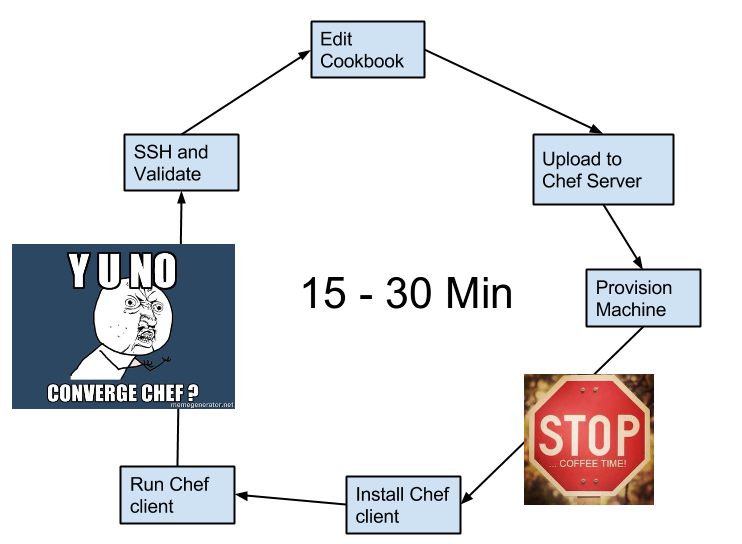
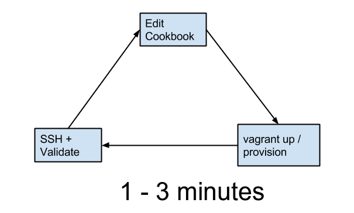
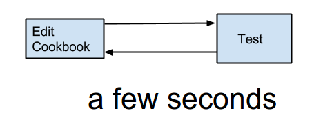
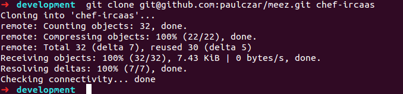

Test Driven Cookbooks
with Strainer and Chefspec
Created by Paul Czarkowski / @pczarkowski
The old feedback loop 
The vagrant / berkshelf feedback loop 
Test Driven Cookbook feedback loop 
Chef Cookbook testing tools
tailor - https://github.com/turboladen/tailor
tailor parses Ruby files and measures them with against a number of common style conventions.
- horizontal spacing
- vertical spacing
- case
Chef Cookbook testing tools
knife cookbook test
- included in knife.
- tests ruby syntax across all .rb files in cookbook
Chef Cookbook testing tools
foodcritic - http://acrmp.github.io/foodcritic/
A linting tool for chef cookbooks, tests for common chef style patterns and other issues that might break converge.
- 'string' not "string" unless "#{string}"
- Missing templates
- invalid resource actions
- metadata validation
Chef Cookbook testing tools
chefspec - https://github.com/sethvargo/chefspec
- unit testing framework for chef cookbooks based off rspec.
- runs cookbook locally without actually converging a node.
- excellent documentation in `examples` dir
- create a spec file in `spec/` for each recipe.
- Can stub out resources, search, etc
Chef Cookbook testing tools
Strainer - https://github.com/customink/strainer
- Runs all of the previously mentioned tests in order
- Honors Berkshelf requirements
# Strainerfile
tailor: bundle exec tailor
knife test: bundle exec knife cookbook test $COOKBOOK
foodcritic: bundle exec foodcritic -f any $SANDBOX/$COOKBOOK
chefspec: bundle exec rspec $SANDBOX/$COOKBOOK/spec
cookbook/Strainerfile
Example Strainer run

Chef Cookbook testing tools
Meez - https://github.com/paulczar/meez
A skeleton chef cookbook with all the wiring for testing
- Vagrantfile
- Gemfile
- Berksfile
- Strainerfile
How to write a Test Driven Cookbook ?
- Create the cookbook skeleton
- Document what you want the recipe to do.
- Write a failing test
- Write the chef recipe to pass that test
Let's make a thing
We're going to deploy this rails app
https://github.com/paulczar/ircaas
Create the cookbook skeleton 
metadata.rb
name 'ircaas'
maintainer 'Paul Czarkowski'
maintainer_email 'username.taken@gmail.com'
license 'All rights reserved'
description 'Installs/Configures ircaas'
long_description IO.read(File.join(File.dirname(__FILE__), 'README.md'))
version '0.1.0'
recipe "ircaas::default", "does nothing"
recipe "ircaas::database", "set up database"
recipe "ircaas::application", "set up rails environment, install code"
%w{ ubuntu }.each do |os|
supports os
end
%w{ ruby git }.each do |dep|
depends dep
end
README.md
Requirements
==============
Chef 0.11.0 or higher required (for Chef environment use).
Cookbooks
----------------
The following cookbooks are dependencies:
* apt
* ruby
* git
Recipes
=======
ircaas::application
---------------------------
* creates user `ircaas`
* includes recipes `git::default`, `ruby::default`
* Install IRCaaS Application code from `https://github.com/paulczar/ircaas`
Attributes
==========
ircaas['user'] - user to run application as
ircaas['git']['repo'] - repo containing IRCaaS code
ircaas['git']['branch'] - Branch to download
spec/application_spec.rb
require_relative 'spec_helper'
describe 'ircaas::application' do
describe 'ubuntu' do
before do
@chef_run = ::ChefSpec::Runner.new ::UBUNTU_OPTS do |node|
node.set['ircaas'] = {
user: 'ircaas',
path: '/opt/ircaas',
git: { repo: 'ssh://git.path', branch: 'master' }
}
end
@chef_run.converge 'ircaas::application'
end
it 'creates ircaas user' do
expect(@chef_run).to create_user('ircaas')
end
it 'includes ruby::default recipe' do
expect(@chef_run).to include_recipe 'ruby::default'
end
it 'includes git::default recipe' do
expect(@chef_run).to include_recipe 'git::default'
end
it 'checkouts ircaas from repo' do
expect(@chef_run).to checkout_git("clone /opt/ircaas").with(repository: 'ssh://git.path', branch: 'master')
end
end
end
recipe/application.rb
# Cookbook Name:: ircaas
# Recipe:: application
user node['ircaas']['user'] do
username node['ircaas']['user']
comment "ircaas User"
shell "/bin/bash"
home "/home/ircaas"
system true
end
include_recipe 'ruby::default'
include_recipe 'git::default'
git "clone #{node['ircaas']['path']}" do
repository node['ircaas']['git']['repo']
branch node['ircaas']['git']['branch']
destination node['ircaas']['path']
action :checkout
end
Run the tests!